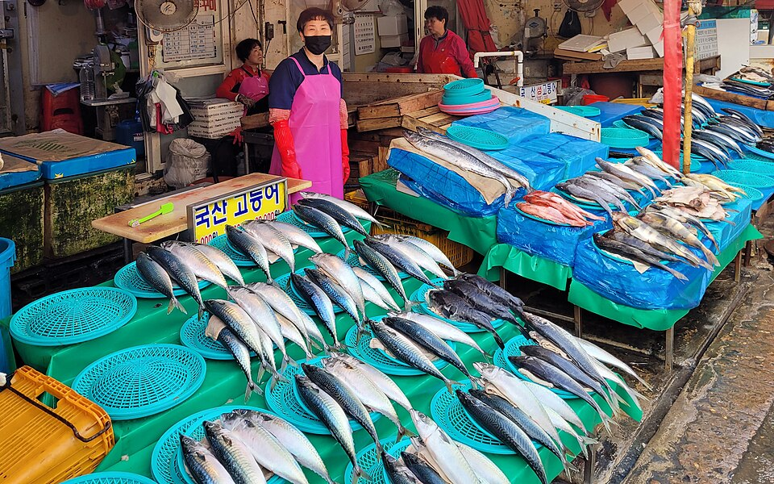

Гид по морепродуктам и рынкам Пусана: рынок Чагальчи, уличная еда в Намподоне, свиной суп двэджи гукбап и милмён
Видеогид по еде в Пусане: как устроена покупка морепродуктов на рынке Чагальчи и приготовление их на верхнем этаже, уличная еда в Намподоне у рынков Ккантхон и Кукчже, рынок Пучжон, улица чокпаля, прозрачный бульон двэджи гукбап и традиция милмён в четырёх поколениях.
Пусан — город моря и рынков, раскинувшийся от Хэундэ до Чагальчи. Если вы планируете, что попробовать, местные фавориты — морепродукты, рыночные закуски, двэджи гукбап (рисовый суп со свининой), милмён (холодная пшеничная лапша) и чокпаль. Этот гид основан на том, что на самом деле ели на камеру ютуберы и корейские телешоу. Цены ниже взяты из описаний к видео и актуальны на момент съёмки.
Рынок Чагальчи: купите морепродукты и ешьте их наверху

📍 Рынок Чагальчи · Naver Map · Google Maps
В нескольких видео Чагальчи описан как крупнейший рынок морепродуктов в Южной Корее. Майк Чен (Strictly Dumpling) побывал там в свой последний день в Пусане и отметил удобную для туристов систему: вы покупаете морепродукты у продавца, а он готовит их и подаёт вам в своём ресторане наверху. В видео Марка Уинса о уличной еде в Пусане показан тот же подход: свежие морепродукты покупают и несут в ресторан.
В видео «Everything I Ate at Jagalchi Market» автор упоминает ресторан №40 и прилавок с морепродуктами №67, где ели краба, королевского краба, креветок, морское ушко, рыбу и гребешки. «Extreme Seafood at Jagalchi Market» от Chef Tyler превращает визит в испытание в духе «Игры в кальмара» из всё более смелых морепродуктов, что полезно, если хотите заранее представить необычные варианты.
Уличная еда в Намподоне: рынки Ккантхон и Кукчже
Корейская ютуберка G-NI (까니짱) начала свою серию о Пусане в Намподоне, гуляя по рынку Ккантхон и рынку Кукчже и пробуя токпокки Leegane (толстые рисовые клецки в остром соусе), бибим тансмён (острую смесь стеклянной лапши) и сиат хотток (сладкие блинчики с семенами).
Видео «24hr Korean Street Food in Busan» охватывает ту же зону, а заведения перечислены в описании:
- Leegane Tteokbokki (48 Bupyeong 1-gil, Jung-gu): токпокки и набор twigim, 4 000 вон
- Bupyeong Yang Gopchang (17 Bupyeong 2-gil, Jung-gu): жареные и тушёные субпродукты, по 35 000 вон
- Bupyeongdong Maetdol Bindaetteok: пажон Dongrae, 15 000 вон
- Bupyeong Jokbal
- Открытый рынок еды на Arirang Street: чунму кимбап, 8 000 вон
- Somoonnan Donuts (Bupyeong-dong): 1 000 вон
- Улица пochangmacha в Намподоне и рынок Кукчже
Три любимых блюда ведущего: чокпаль в Bupyeong Jokbal, пажон в Maetdol Bindaetteok иян копчан в Bupyeong Yang Gopchang.
Улица чокпаля в Пусане
В программе «Welcome, First Time in Korea?» на MBC every1 трое итальянских шеф-поваров с мишленовскими звёздами посещают улицу чокпаля в Пусане. Они начинают с мэсэнги-гук (суп из водорослей), затем пробуют обычный чокпаль, острый пул-чокпаль и холодный нэнчэ чокпаль, а завершают гречневой лапшой макгуксу. Холодный нэнчэ чокпаль разделил мнения, и это стоит знать, если вас смущает холодная свинина с горчичной заправкой.
Рынок Пучжон: уличная еда и кухонная утварь
📍 Рынок Пучжон · Naver Map · Google Maps
В той же программе рынок Пучжон представлен как крупнейший традиционный рынок Пусана. Шеф-повара осматривают корейскую рыбу, в итоге покупают 72 миски в магазине кухонной утвари и впервые пробуют кимбап. Это хорошее место, если хотите посмотреть посуду и кухонные принадлежности вместе с рыночной едой.
Двэджи гукбап (свиной рисовый суп)
В программе Хон Ён-мана «Food Travel» (TV Chosun, эпизод 336) представлен пусанский двэджи гукбап с прозрачным бульоном и примерно нарезанной вручную свининой, который описан как особенно сытный. В другом видео путешественник впервые пробует двэджи гукбап в Пусане и называет его свиным рисовым супом, который просто согревает душу.
Милмён (холодная пшеничная лапша Пусана)
Эпизод 145 программы Хон Ён-мана «Food Travel» посвящён пусанской традиции милмён, которой четыре поколения и 100 лет, и отмечает, что лапша отличается от нэнмён и имеет самобытный насыщенный бульон. Naeho Naengmyeon, упомянутый среди мест из видео, известен именно этим милмён, которому 100 лет и который передаётся четырьмя поколениями.

📍 Naeho Naengmyeon · Naver Map · Google Maps
Советы по планированию
- В Намподоне за одну прогулку можно обойти рынок Ккантхон, рынок Кукчже, рестораны в Пучжон-доне и улицу чокпаля. Делитесь мелкими закусками вроде токпокки и хотток по пути, чтобы осталось место для других остановок, как показано в видео.
- В Чагальчи обычный порядок такой: выбираете морепродукты внизу, едите наверху. С группой можно попробовать больше видов.
- Как в влоге Лизы и Джоша, день можно построить вокруг деревни культуры Камчхон, Соммён, Пусанского городского парка и рынка Чагальчи.
- Поставьте миску двэджи гукбапа или милмён между морепродуктами и уличной едой, чтобы попробовать визитные блюда Пусана.
- Цены в видео записаны на момент съёмки; уточняйте актуальные цены на месте.
Места из видео
- Рынок Чагальчи (자갈치시장) Сашими и морепродукты Naver Map Google Maps
- Рынок Пучжон (부전시장) Рыночная еда и кухонная утварь Naver Map Google Maps
- Naeho Naengmyeon (Наэхо Нэнмён) (내호냉면) Милмён (пшеничная лапша в холодном бульоне), семейная традиция длиной 100 лет в четырёх поколениях Naver Map Google Maps
Адреса и часы работы могут меняться — проверьте карту перед поездкой.
Похожие видео
 Largest Seafood Market in Korea – Jagalchi Market
Largest Seafood Market in Korea – Jagalchi Market
 Korean Street Food - EXTREME SEAFOOD + Must Eat Food in Busan, South Korea!! 🇰🇷
Korean Street Food - EXTREME SEAFOOD + Must Eat Food in Busan, South Korea!! 🇰🇷
 24hr KOREAN STREET FOOD in BUSAN
24hr KOREAN STREET FOOD in BUSAN
 Mukbang 부산 Ep1. 남포동 (깡통시장, 국제시장, 이가네떡볶이, 비빔당면, 씨앗호떡) | Busan 먹방 ☺
Mukbang 부산 Ep1. 남포동 (깡통시장, 국제시장, 이가네떡볶이, 비빔당면, 씨앗호떡) | Busan 먹방 ☺
 맑게 우려낸 부산 돼지국밥
맑게 우려낸 부산 돼지국밥
 4대째 100년 전통 부산 밀면 (145회)
4대째 100년 전통 부산 밀면 (145회)
 [하이라이트] 부산 족발거리 – 족발, 불족발, 냉채족발, 막국수
[하이라이트] 부산 족발거리 – 족발, 불족발, 냉채족발, 막국수
 [하이라이트] 부전시장에서 그릇 72개 산 미슐랭 셰프들 + 김밥 첫 경험
[하이라이트] 부전시장에서 그릇 72개 산 미슐랭 셰프들 + 김밥 첫 경험
Другие статьи
- Места Сеула из телешоу: Лотте уорлд тауэр на высоте 541 м и Военный мемориал Кореи
- Чоннам на экране: морская канатная дорога и остров Одондо в Ёсу
- Гайд по еде провинции Чолла-Наму: кабан-краб Ёсу, морепродукты и банчхан Мокпхо, еда Кванджу по корейским шоу
- Гид по уличной еде и рынкам Сеула: что попробовать на рынке Кванчжан, рыбном рынке Норянджин и не только (по видео с фудтуров)
- Гид по корейской косметике в Сеуле: шопинг в Olive Young в Мёндоне и Сонсу, косметологические клиники и процедуры
- Гид по корейской кухне по регионам: что поесть в Сеуле, Пусане, Чеджу, Мокпо, Тэгу, Чонджу и других городах (по популярным видео мукбанг и кулинарным роликам на YouTube)